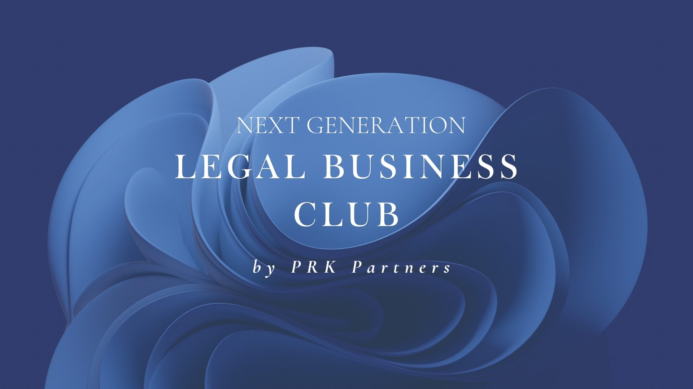

Komunita, která propojuje dva světy
Komunita manažerů, podnikatelů, investorů a právníků, kteří se potkávají osobně – pokaždé na jiném inspirativním místě a mimo zasedačky.
Nejbližší setkání
Prosinec 2026
12. setkání klubu · téma a místo oznámíme brzy
~200
členů z různých oborů
11
setkání za sebou
3. rok
propojujeme právo a byznys
8
různých míst po Praze
O klubu
Nabízíme unikátní mix diskusních večerů, workshopů a networkingu, které vás propojí s předními odborníky a otevřou příležitosti pro osobní i profesní růst.
Ať už jste zkušený manažer, podnikatel, CEO, nebo vás jen zajímají právní inovace – u nás se potkáte osobně s lidmi, se kterými jste dosud komunikovali třeba jen přes LinkedIn.
Večery s hosty z byznysu, investic i práva na témata, která právě hýbou trhem – od AI po development.
Od Martinického paláce po kavárnu Anežka – prostředí, které rozproudí jiný typ rozhovorů.
Osobní péče o každého člena a menší odborné skupiny s garanty, aby klub neztratil svůj charakter.
Historie setkání
Všech 11 setkání od otevření klubu v dubnu 2024. Rozklikněte setkání a uvidíte, o čem se mluvilo, hosty i moderátory.
Vedení klubu
Reference členů
„“
Napsali o nás
Členství
Napište nám pár slov o sobě a ozveme se s bližšími informacemi. Pokud chcete na setkání vzít hosta, dejte vědět taky.
Děkujeme!
Vaši zprávu jsme přijali a brzy se ozveme.